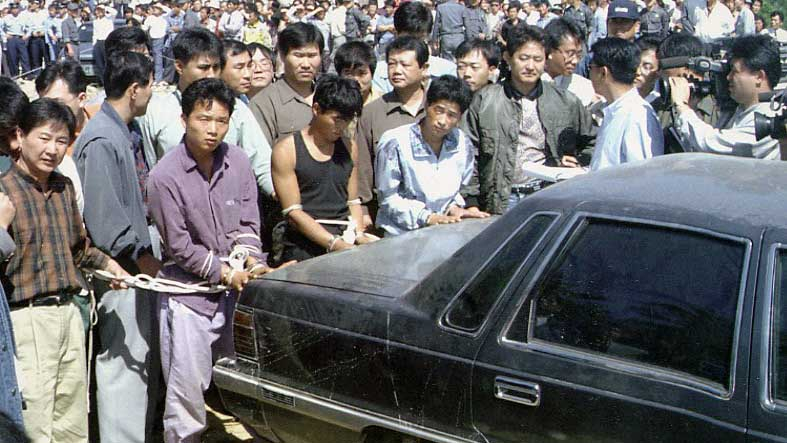

The Chijon Family is a Korean Cannibal Gang, founded in 1993 by Kim Ki-hwan, a former convict, and six other former prisoners and unemployed workers who shared his grudge against the rich. Totalling eight in number, with one woman in their group, the gang set out in their quest on infliction of harm on the rich. 'Chijon' is a name given to the gang by prosecutors working on the case — Kim had originally named his gang the Mascan, a supposed Greek word for 'ambition'
The gang was dedicated to the kidnapping and killing of the rich in ways unimaginably gruesome. The Chijon family as they later came to be known would abduct their rich victims and get in touch with their families to ask for ransom, and they were always paid. But no matter how much these families and loved ones of the victims give away as ransom, these victims were never set free. They were rather treated in the most disrespectful of ways and finally killed. In one of the cases, they were able to extort the lump sum of $100,000.00 from a particular victim’s family at that time. Eventually, after collecting the huge ransom, they still killed and ate the victim.
Their belief was that eating the flesh dof their victims would give them courage, which is why Kim Ki-hwan named their gang Mescan in the first place at their formation, which was supposed to be for them, a Greek word that meant courage. A point came when they decided they needed to be very sure they would make any mistakes in their abductions. By this time they had had a series of successful operations and collected a number of ransoms and had become more bold and daring. They had become the rich’s undeserved nemesis in Seoul, South Korea.